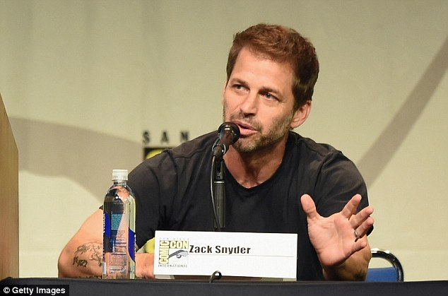
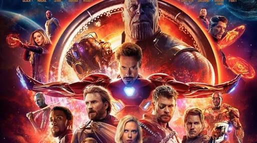
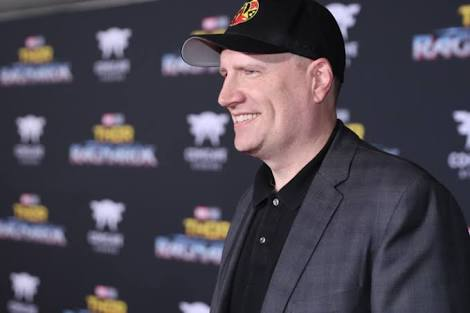
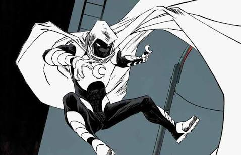
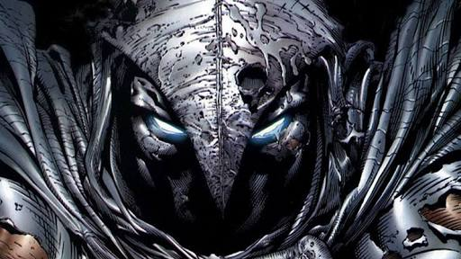
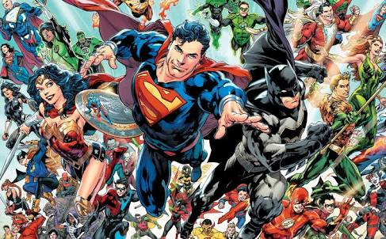
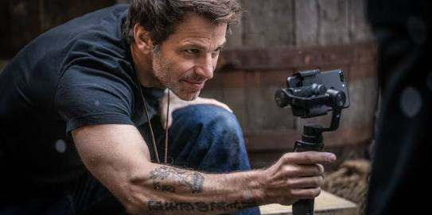
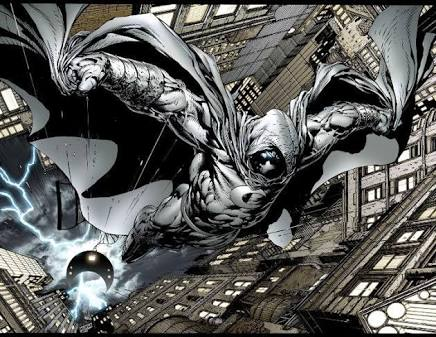
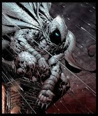

SYNDER HIRED BY MARVEL!
MARVEL'S NEW GAME TO HIT DC HARD
Zack Synder is finally in Marvel's new $100mn game . Moon Knight to hit the rolls in 2019.The man behind Batman betrays DC
This is a kicker
As we all know that Infinity war is going to hit theatres on April 27th on the scale of one to infinity how excited are you?

Premiering this Summer, Infinity War will kick off the summer celebrations of Hollywood blockbusters in style, Fox’s Deadpool 2 and Disney’s very own Solo: A Star Wars Story will release in the following weeks. Marvel’s latest Black Panther has been raking in big numbers at the box office and now Marvel studios is all set to make an exciting announcement!

Rivalry between DC and Marvel is much talked about by Movie fans, while Kevin Feige just made an official statement saying "The Marvel and DC rivalry is dead. Or, at the very least, it's a myth, perpetrated by the media. Fake news, as some might say." "I buy a ticket, and I watch the movie. There's not really a rivalry. A rivalry is much more amongst the press, I think. Geoff Johns [at DC] is a very good friend of mine. We grew up together in the business and recently celebrated Richard Donner, who we both used to work for. So, I applaud all the successes he has. And I really just look at it as a fan. When the movies perform well and are well-received, it's good for us---which is why I'm always rooting for them." He added.

In the time like this Marvel announced a project with Director Zack Snyder the very own "Father of DCEU", who helmed Man of Steel, Batman v Superman: Dawn of Justice and the majority of Justice League.

Love for Snyder by DC fans is everlasting. But there's another side of a large and loud segment of DC fandom insists there's some sort of broad conspiracy of hatred and attack targeting the DCEU movies in general, and Zack Snyder in particular. This negativity, they claim, is based on a triangle of guilty parties -- film critics, bloggers, and Rotten Tomatoes. The notion is that an unfair, cruel "bias" has rendered film criticism and aggregate sites like Rotten Tomatoes irrelevant and an outright existential threat to DCEU movies and fandom, and that a coordinated aggressively hostile counter-attack by fans is necessary to stop critics and Rotten Tomatoes from harming the fate and finances of the DCEU.

Finally after leaving the DCEU, Snyder decided to make a Marvel project "The Moon Knight". Moon Knight (Marc Spector) is a fictionalsuperhero appearing in Marvel Comics. Created by Doug Moench and Don Perlin, the character first appeared in Werewolf by Night.

Ongoing Comic series "Moon Knight" made it's first appearance in August 1975. Born in Chicago, Illinois, Marc Spector is a Jewish-American rabbi's wayward son. As an adult, Spector had been a heavyweight boxer before becoming a U.S. Marine, afterwards he left the United States military to become a mercenary.

Origin of being "created by The Committee", he later becomes a strong and skilled combatant and befriends the Frenchpilot Jean-Paul DuChamp, whom he affectionately calls "Frenchie". While working for the African mercenary Raoul Bushman in Egypt, the group stumbles upon an archaeological dig whose crew includes Dr. Peter Alraune and his daughter Marlene. The dig had uncovered an ancient temple where artifacts included a statue of the Egyptianmoon god Khonshu.

Looting the dig, Bushman kills Dr. Alraune. In response to Alraune's murder, Spector challenges Bushman to personal combat and is defeated by Bushman and left to die in the sub-zero temperatures of the desert night.
Jeff Wilde the teenage sidekick, also know as "Midnight", a member of Moon Knight's rogues gallery. At this time, Moon Knight first encounters the Black Cat. Midnight is turned into a cyborg by the Secret Empire.
Secret Empire then is seemingly killed in a battle with Moon Knight, Spider-Man, Darkhawk, the Punisher, Nova and Night Thrasher.
So are you ready to experience the Snyder's vision of Marvel Universe. Snyder is keenly interested in the charecter of Moon Knight because of his Darker portrayal in the Comics. Let's wait for further updates on the project and casting details.